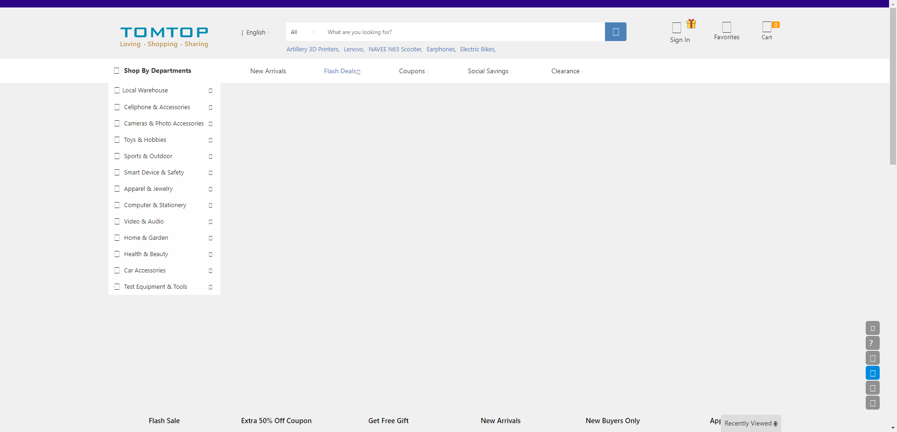
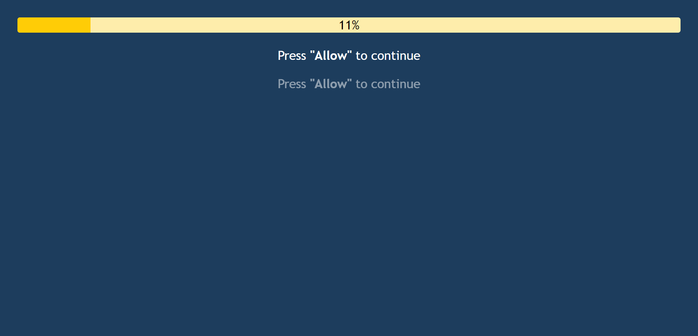
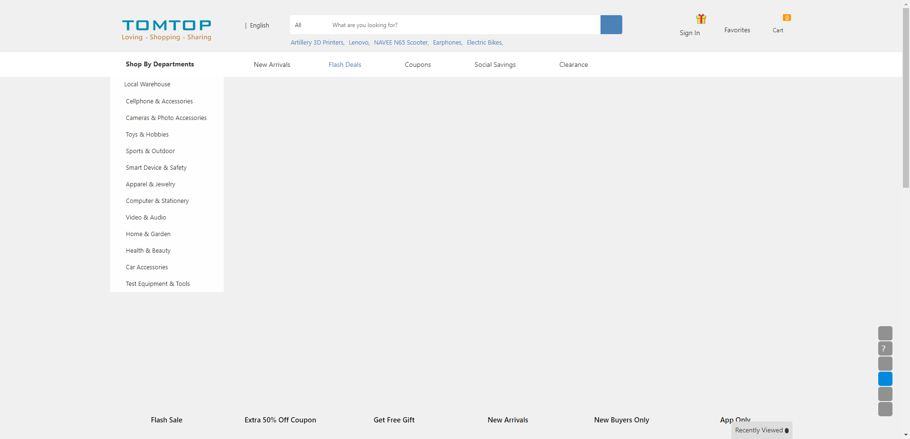

-
Add New Patient Page
11:15:41 AM / 00:03:40:521 Fail
Add New Patient Page
06.13.2022 11:15:41 AM 06.13.2022 11:19:21 AM 00:03:40:521 · #test-id=1FailAdd New Patient DetailsGiven User is on the Add New Patient PagestepDefinitions.Hooks.failedScreenshot(io.cucumber.java.Scenario)imageThen Patient Data Form is visibleStep skippedstepDefinitions.Hooks.tearDown()FailEmpty Form submission For Add New Patient DetailsFailEmpty Form submission For Add New Patient DetailsGiven User is on the Add New Patient PagestepDefinitions.Hooks.failedScreenshot(io.cucumber.java.Scenario)imageWhen User attempts to submit the form without filling up mandatory fieldsStep skippedThen Unable to update and show error message as "NewPatient_FullName" and 0Step skippedFailState, province or region Field Empty Value ValidationFailState, province or region Field Empty Value ValidationGiven User is on the Add New Patient PagestepDefinitions.Hooks.failedScreenshot(io.cucumber.java.Scenario)imageWhen User attempts to submit the form without filling up State, province or region field as in "NewPatient_Address" and 5Step skippedThen Unable to enter and show error message as in "NewPatient_Address" and 5Step skippedFail"Full Name" Field Empty Value ValidationFail"Full Name" Field Empty Value ValidationGiven User is on the Add New Patient PagestepDefinitions.Hooks.failedScreenshot(io.cucumber.java.Scenario)imageWhen User attempts to submit the form without filling up Full Name field as in "NewPatient_FullName" and 2Step skippedThen Unable to enter and show error message as in "NewPatient_FullName" and 2Step skippedFail"Addess line 1" Field Empty Value ValidationFail"Addess line 1" Field Empty Value ValidationGiven User is on the Add New Patient PagestepDefinitions.Hooks.failedScreenshot(io.cucumber.java.Scenario)imageWhen User does not enter any value in Addess line 1 field as in "NewPatient_Address" and 0Step skippedThen Unable to enter and show error message as in "NewPatient_Address" and 0Step skippedFailCity Field Empty Value ValidationFailCity Field Empty Value ValidationGiven User is on the Add New Patient PagestepDefinitions.Hooks.failedScreenshot(io.cucumber.java.Scenario)image When User attempts to submit the form without filling up City field as in "NewPatient_Address" and 3Step skippedThen Unable to enter and show error message as in "NewPatient_Address" and 3Step skippedFailCity Field Numeric Value ValidationFailCity Field Numeric Value ValidationGiven User is on the Add New Patient PagestepDefinitions.Hooks.failedScreenshot(io.cucumber.java.Scenario)imageWhen User attempts to put numeric value in City field as in "NewPatient_Address" and 2Step skippedThen Unable to enter and show error message as in "NewPatient_Address" and 2Step skippedFail"Full Name" Field Numeric Value ValidationFail"Full Name" Field Numeric Value ValidationGiven User is on the Add New Patient PagestepDefinitions.Hooks.failedScreenshot(io.cucumber.java.Scenario)imageWhen User attempts to put numeric value in Full Name field as in "NewPatient_FullName" and 1Step skippedThen Unable to enter and show error message as in "NewPatient_FullName" and 1Step skippedFail"Country" Field Empty Value ValidationFail"Country" Field Empty Value ValidationGiven User is on the Add New Patient PagestepDefinitions.Hooks.failedScreenshot(io.cucumber.java.Scenario)imageWhen User attempts to submit the form without selecting any value for Country field as in "NewPatient_Address" and 1Step skippedThen Unable to enter and show error message as in "NewPatient_Address" and 1Step skippedFailState, province or region Field Numeric Value ValidationFailState, province or region Field Numeric Value ValidationGiven User is on the Add New Patient PagestepDefinitions.Hooks.failedScreenshot(io.cucumber.java.Scenario)image
When User attempts to submit the form without filling up City field as in "NewPatient_Address" and 3Step skippedThen Unable to enter and show error message as in "NewPatient_Address" and 3Step skippedFailCity Field Numeric Value ValidationFailCity Field Numeric Value ValidationGiven User is on the Add New Patient PagestepDefinitions.Hooks.failedScreenshot(io.cucumber.java.Scenario)imageWhen User attempts to put numeric value in City field as in "NewPatient_Address" and 2Step skippedThen Unable to enter and show error message as in "NewPatient_Address" and 2Step skippedFail"Full Name" Field Numeric Value ValidationFail"Full Name" Field Numeric Value ValidationGiven User is on the Add New Patient PagestepDefinitions.Hooks.failedScreenshot(io.cucumber.java.Scenario)imageWhen User attempts to put numeric value in Full Name field as in "NewPatient_FullName" and 1Step skippedThen Unable to enter and show error message as in "NewPatient_FullName" and 1Step skippedFail"Country" Field Empty Value ValidationFail"Country" Field Empty Value ValidationGiven User is on the Add New Patient PagestepDefinitions.Hooks.failedScreenshot(io.cucumber.java.Scenario)imageWhen User attempts to submit the form without selecting any value for Country field as in "NewPatient_Address" and 1Step skippedThen Unable to enter and show error message as in "NewPatient_Address" and 1Step skippedFailState, province or region Field Numeric Value ValidationFailState, province or region Field Numeric Value ValidationGiven User is on the Add New Patient PagestepDefinitions.Hooks.failedScreenshot(io.cucumber.java.Scenario)image When User attempts to put numeric value in State, province or region as in "NewPatient_Address" and 4Step skippedThen Unable to enter and show error message as in "NewPatient_Address" and 4Step skippedFail"Postal code" Field Empty Value ValidationFail"Postal code" Field Empty Value ValidationGiven User is on the Add New Patient PagestepDefinitions.Hooks.failedScreenshot(io.cucumber.java.Scenario)image
When User attempts to put numeric value in State, province or region as in "NewPatient_Address" and 4Step skippedThen Unable to enter and show error message as in "NewPatient_Address" and 4Step skippedFail"Postal code" Field Empty Value ValidationFail"Postal code" Field Empty Value ValidationGiven User is on the Add New Patient PagestepDefinitions.Hooks.failedScreenshot(io.cucumber.java.Scenario)image When User attempts to submit the form without filling up Postal code field as in "NewPatient_Address" and 6Step skippedThen Unable to enter and show error message as in "NewPatient_Address" and 6Step skippedFailPostal code Field Wrong Data Format ValidationFailPostal code Field Wrong Data Format ValidationGiven User is on the Add New Patient PagestepDefinitions.Hooks.failedScreenshot(io.cucumber.java.Scenario)image
When User attempts to submit the form without filling up Postal code field as in "NewPatient_Address" and 6Step skippedThen Unable to enter and show error message as in "NewPatient_Address" and 6Step skippedFailPostal code Field Wrong Data Format ValidationFailPostal code Field Wrong Data Format ValidationGiven User is on the Add New Patient PagestepDefinitions.Hooks.failedScreenshot(io.cucumber.java.Scenario)image When User entered not supported data format in Postal code field as in "NewPatient_Address" and 7Step skippedThen Unable to enter and show error message as in "NewPatient_Address" and 7Step skippedFailEmail Field Empty Value ValidationFailEmail Field Empty Value ValidationGiven User is on the Add New Patient PagestepDefinitions.Hooks.failedScreenshot(io.cucumber.java.Scenario)imageWhen User does not enter any value in Email field as in "NewPatient_Email" and 0Step skippedThen Unable to enter and show error message as in "NewPatient_Email" and 0Step skippedFailPhone number Field Character Value ValidationFailPhone number Field Character Value ValidationGiven User is on the Add New Patient PagestepDefinitions.Hooks.failedScreenshot(io.cucumber.java.Scenario)imageWhen User attempts to put characters in Phone number field as in "NewPatient_Phone" and 0Step skippedThen Unable to enter and show error message as in "NewPatient_Phone" and 0Step skippedFailEmail Field Wrong Data Fomat ValidationFailEmail Field Wrong Data Fomat ValidationGiven User is on the Add New Patient PagestepDefinitions.Hooks.failedScreenshot(io.cucumber.java.Scenario)imageWhen User entered not supported data format in Email field as in "NewPatient_Email" and 1Step skippedThen Unable to enter and show error message as in "NewPatient_Email" and 1Step skippedFailPhone number Field Empty Value ValidationFailPhone number Field Empty Value ValidationGiven User is on the Add New Patient PagestepDefinitions.Hooks.failedScreenshot(io.cucumber.java.Scenario)image
When User entered not supported data format in Postal code field as in "NewPatient_Address" and 7Step skippedThen Unable to enter and show error message as in "NewPatient_Address" and 7Step skippedFailEmail Field Empty Value ValidationFailEmail Field Empty Value ValidationGiven User is on the Add New Patient PagestepDefinitions.Hooks.failedScreenshot(io.cucumber.java.Scenario)imageWhen User does not enter any value in Email field as in "NewPatient_Email" and 0Step skippedThen Unable to enter and show error message as in "NewPatient_Email" and 0Step skippedFailPhone number Field Character Value ValidationFailPhone number Field Character Value ValidationGiven User is on the Add New Patient PagestepDefinitions.Hooks.failedScreenshot(io.cucumber.java.Scenario)imageWhen User attempts to put characters in Phone number field as in "NewPatient_Phone" and 0Step skippedThen Unable to enter and show error message as in "NewPatient_Phone" and 0Step skippedFailEmail Field Wrong Data Fomat ValidationFailEmail Field Wrong Data Fomat ValidationGiven User is on the Add New Patient PagestepDefinitions.Hooks.failedScreenshot(io.cucumber.java.Scenario)imageWhen User entered not supported data format in Email field as in "NewPatient_Email" and 1Step skippedThen Unable to enter and show error message as in "NewPatient_Email" and 1Step skippedFailPhone number Field Empty Value ValidationFailPhone number Field Empty Value ValidationGiven User is on the Add New Patient PagestepDefinitions.Hooks.failedScreenshot(io.cucumber.java.Scenario)image When User attempts to submit the form without filling up Phone number field as in "NewPatient_Phone" and 1Step skippedThen Unable to enter and show error message as in "NewPatient_Phone" and 1Step skippedFailPhone number should be 10 digitsFailPhone number should be 10 digitsGiven User is on the Add New Patient PagestepDefinitions.Hooks.failedScreenshot(io.cucumber.java.Scenario)imageWhen User fills up the form with valid phone as in "NewPatient_Phone" and 2Step skippedThen User can see Add New Patient buttonStep skippedFailPhone number boundary value less then 10 digitsFailPhone number boundary value less then 10 digitsGiven User is on the Add New Patient PagestepDefinitions.Hooks.failedScreenshot(io.cucumber.java.Scenario)imageWhen User fills up the form with Data less than 10 as in "NewPatient_Phone" and 3Step skippedThen Unable to enter and show error message as in "NewPatient_Phone" and 3Step skippedFail"Phone number " boundary value more then 10 digitsFail"Phone number " boundary value more then 10 digitsGiven User is on the Add New Patient PagestepDefinitions.Hooks.failedScreenshot(io.cucumber.java.Scenario)image
When User attempts to submit the form without filling up Phone number field as in "NewPatient_Phone" and 1Step skippedThen Unable to enter and show error message as in "NewPatient_Phone" and 1Step skippedFailPhone number should be 10 digitsFailPhone number should be 10 digitsGiven User is on the Add New Patient PagestepDefinitions.Hooks.failedScreenshot(io.cucumber.java.Scenario)imageWhen User fills up the form with valid phone as in "NewPatient_Phone" and 2Step skippedThen User can see Add New Patient buttonStep skippedFailPhone number boundary value less then 10 digitsFailPhone number boundary value less then 10 digitsGiven User is on the Add New Patient PagestepDefinitions.Hooks.failedScreenshot(io.cucumber.java.Scenario)imageWhen User fills up the form with Data less than 10 as in "NewPatient_Phone" and 3Step skippedThen Unable to enter and show error message as in "NewPatient_Phone" and 3Step skippedFail"Phone number " boundary value more then 10 digitsFail"Phone number " boundary value more then 10 digitsGiven User is on the Add New Patient PagestepDefinitions.Hooks.failedScreenshot(io.cucumber.java.Scenario)image When User fills up the form with Data more than 10 as in "NewPatient_Phone" and 4Step skippedThen Unable to enter and show error message as in "NewPatient_Phone" and 4Step skippedFail"Phone number" special character validationFail"Phone number" special character validationGiven User is on the Add New Patient PagestepDefinitions.Hooks.failedScreenshot(io.cucumber.java.Scenario)image
When User fills up the form with Data more than 10 as in "NewPatient_Phone" and 4Step skippedThen Unable to enter and show error message as in "NewPatient_Phone" and 4Step skippedFail"Phone number" special character validationFail"Phone number" special character validationGiven User is on the Add New Patient PagestepDefinitions.Hooks.failedScreenshot(io.cucumber.java.Scenario)image When User fills up the phone number with invalid characters as in "NewPatient_Phone" and 5Step skippedThen Unable to enter and show error message as in "NewPatient_Phone" and 5Step skippedFailInserting Valid New Patient data submissionFailInserting Valid New Patient data submissionGiven User is on the Add New Patient PagestepDefinitions.Hooks.failedScreenshot(io.cucumber.java.Scenario)imageWhen User fills up the form with Valid Data Inputs as in "ValidNewPatient" and 7Step skippedThen User can see Add New Patient buttonStep skippedFailValid New Patient data submissionFailValid New Patient data submissionGiven User is on the Add New Patient PagestepDefinitions.Hooks.failedScreenshot(io.cucumber.java.Scenario)imageWhen User clicks on the Add New Patient button after entering valid Patient data as in "ValidNewPatient" and 7Step skippedThen User lands on My Patients page with the "New Patient" details displayedStep skipped
When User fills up the phone number with invalid characters as in "NewPatient_Phone" and 5Step skippedThen Unable to enter and show error message as in "NewPatient_Phone" and 5Step skippedFailInserting Valid New Patient data submissionFailInserting Valid New Patient data submissionGiven User is on the Add New Patient PagestepDefinitions.Hooks.failedScreenshot(io.cucumber.java.Scenario)imageWhen User fills up the form with Valid Data Inputs as in "ValidNewPatient" and 7Step skippedThen User can see Add New Patient buttonStep skippedFailValid New Patient data submissionFailValid New Patient data submissionGiven User is on the Add New Patient PagestepDefinitions.Hooks.failedScreenshot(io.cucumber.java.Scenario)imageWhen User clicks on the Add New Patient button after entering valid Patient data as in "ValidNewPatient" and 7Step skippedThen User lands on My Patients page with the "New Patient" details displayedStep skipped
-
java.lang.AssertionError
19 tests
java.lang.AssertionError
19 failedStatus Timestamp TestName Fail 11:15:41 AM Given User is on the Add New Patient Page Add New Patient Page.City Field Numeric Value Validation.Given User is on the Add New Patient PageFail 11:15:41 AM Given User is on the Add New Patient Page Add New Patient Page.City Field Empty Value Validation.Given User is on the Add New Patient PageFail 11:15:41 AM Given User is on the Add New Patient Page Add New Patient Page."Addess line 1" Field Empty Value Validation.Given User is on the Add New Patient PageFail 11:15:41 AM Given User is on the Add New Patient Page Add New Patient Page."Full Name" Field Numeric Value Validation.Given User is on the Add New Patient PageFail 11:15:41 AM Given User is on the Add New Patient Page Add New Patient Page."Full Name" Field Empty Value Validation.Given User is on the Add New Patient PageFail 11:15:41 AM Given User is on the Add New Patient Page Add New Patient Page."Country" Field Empty Value Validation.Given User is on the Add New Patient PageFail 11:15:41 AM Given User is on the Add New Patient Page Add New Patient Page.Add New Patient Details.Given User is on the Add New Patient PageFail 11:15:41 AM Given User is on the Add New Patient Page Add New Patient Page.State, province or region Field Numeric Value Validation.Given User is on the Add New Patient PageFail 11:17:04 AM Given User is on the Add New Patient Page Add New Patient Page.Email Field Empty Value Validation.Given User is on the Add New Patient PageFail 11:17:03 AM Given User is on the Add New Patient Page Add New Patient Page.Postal code Field Wrong Data Format Validation.Given User is on the Add New Patient PageFail 11:17:07 AM Given User is on the Add New Patient Page Add New Patient Page.Phone number Field Empty Value Validation.Given User is on the Add New Patient PageFail 11:17:03 AM Given User is on the Add New Patient Page Add New Patient Page."Postal code" Field Empty Value Validation.Given User is on the Add New Patient PageFail 11:17:05 AM Given User is on the Add New Patient Page Add New Patient Page.Phone number Field Character Value Validation.Given User is on the Add New Patient PageFail 11:17:05 AM Given User is on the Add New Patient Page Add New Patient Page.Email Field Wrong Data Fomat Validation.Given User is on the Add New Patient PageFail 11:17:28 AM Given User is on the Add New Patient Page Add New Patient Page.Phone number boundary value less then 10 digits.Given User is on the Add New Patient PageFail 11:17:27 AM Given User is on the Add New Patient Page Add New Patient Page.Phone number should be 10 digits.Given User is on the Add New Patient PageFail 11:17:43 AM Given User is on the Add New Patient Page Add New Patient Page."Phone number " boundary value more then 10 digits.Given User is on the Add New Patient PageFail 11:17:57 AM Given User is on the Add New Patient Page Add New Patient Page."Phone number" special character validation.Given User is on the Add New Patient PageFail 11:18:00 AM Given User is on the Add New Patient Page Add New Patient Page.Inserting Valid New Patient data submission.Given User is on the Add New Patient Page -
org.openqa.selenium.WebDriverException
4 tests
org.openqa.selenium.WebDriverException
4 failedStatus Timestamp TestName Fail 11:15:41 AM Given User is on the Add New Patient Page Add New Patient Page.State, province or region Field Empty Value Validation.Given User is on the Add New Patient PageFail 11:15:41 AM Given User is on the Add New Patient Page Add New Patient Page.Empty Form submission For Add New Patient Details.Given User is on the Add New Patient PageFail 11:17:05 AM stepDefinitions.Hooks.tearDown() Add New Patient Page.Add New Patient Details.stepDefinitions.Hooks.tearDown()Fail 11:18:06 AM Given User is on the Add New Patient Page Add New Patient Page.Valid New Patient data submission.Given User is on the Add New Patient Page
-
@DieticianLogin
23 tests
@DieticianLogin
23 failedStatus Timestamp TestName Fail 11:15:41 AM Add New Patient Details Add New Patient Page.Add New Patient DetailsFail 11:15:41 AM Empty Form submission For Add New Patient Details Add New Patient Page.Empty Form submission For Add New Patient DetailsFail 11:15:41 AM State, province or region Field Empty Value Validation Add New Patient Page.State, province or region Field Empty Value ValidationFail 11:15:41 AM "Full Name" Field Empty Value Validation Add New Patient Page."Full Name" Field Empty Value ValidationFail 11:15:41 AM "Addess line 1" Field Empty Value Validation Add New Patient Page."Addess line 1" Field Empty Value ValidationFail 11:15:41 AM City Field Empty Value Validation Add New Patient Page.City Field Empty Value ValidationFail 11:15:41 AM City Field Numeric Value Validation Add New Patient Page.City Field Numeric Value ValidationFail 11:15:41 AM "Full Name" Field Numeric Value Validation Add New Patient Page."Full Name" Field Numeric Value ValidationFail 11:15:41 AM "Country" Field Empty Value Validation Add New Patient Page."Country" Field Empty Value ValidationFail 11:15:41 AM State, province or region Field Numeric Value Validation Add New Patient Page.State, province or region Field Numeric Value ValidationFail 11:17:03 AM "Postal code" Field Empty Value Validation Add New Patient Page."Postal code" Field Empty Value ValidationFail 11:17:03 AM Postal code Field Wrong Data Format Validation Add New Patient Page.Postal code Field Wrong Data Format ValidationFail 11:17:04 AM Email Field Empty Value Validation Add New Patient Page.Email Field Empty Value ValidationFail 11:17:05 AM Phone number Field Character Value Validation Add New Patient Page.Phone number Field Character Value ValidationFail 11:17:05 AM Email Field Wrong Data Fomat Validation Add New Patient Page.Email Field Wrong Data Fomat ValidationFail 11:17:07 AM Phone number Field Empty Value Validation Add New Patient Page.Phone number Field Empty Value ValidationFail 11:17:27 AM Phone number should be 10 digits Add New Patient Page.Phone number should be 10 digitsFail 11:17:28 AM Phone number boundary value less then 10 digits Add New Patient Page.Phone number boundary value less then 10 digitsFail 11:17:28 AM Phone number boundary value less then 10 digits Add New Patient Page.Phone number boundary value less then 10 digitsFail 11:17:43 AM "Phone number " boundary value more then 10 digits Add New Patient Page."Phone number " boundary value more then 10 digitsFail 11:17:57 AM "Phone number" special character validation Add New Patient Page."Phone number" special character validationFail 11:18:00 AM Inserting Valid New Patient data submission Add New Patient Page.Inserting Valid New Patient data submissionFail 11:18:06 AM Valid New Patient data submission Add New Patient Page.Valid New Patient data submission
Started
Jun 13, 2022 11:15:38 AM
Ended
Jun 13, 2022 11:19:21 AM
Features Passed
0
Features Failed
1
Features
Scenarios
Steps
Timeline
Tags
| Name | Passed | Failed | Skipped | Others | Passed % |
|---|---|---|---|---|---|
| @DieticianLogin | 0 | 23 | 0 | 0 | 0% |